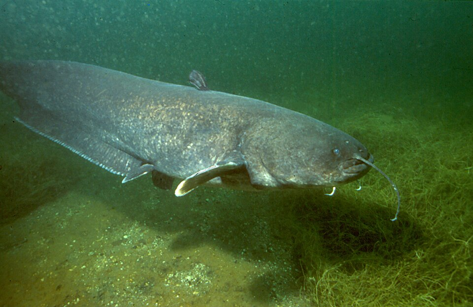
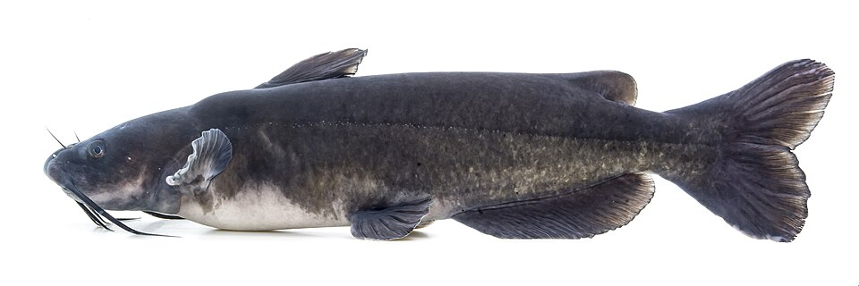
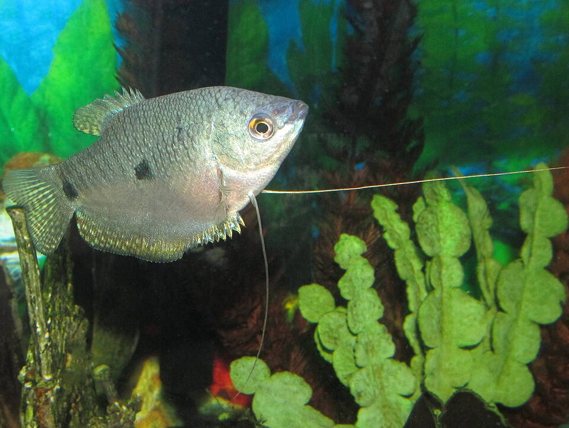
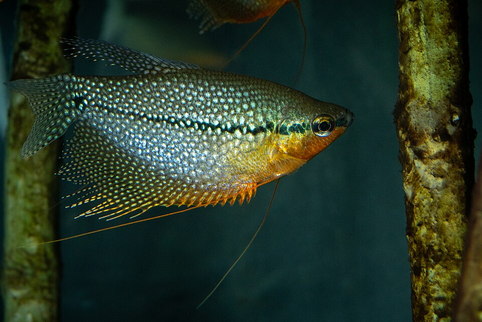
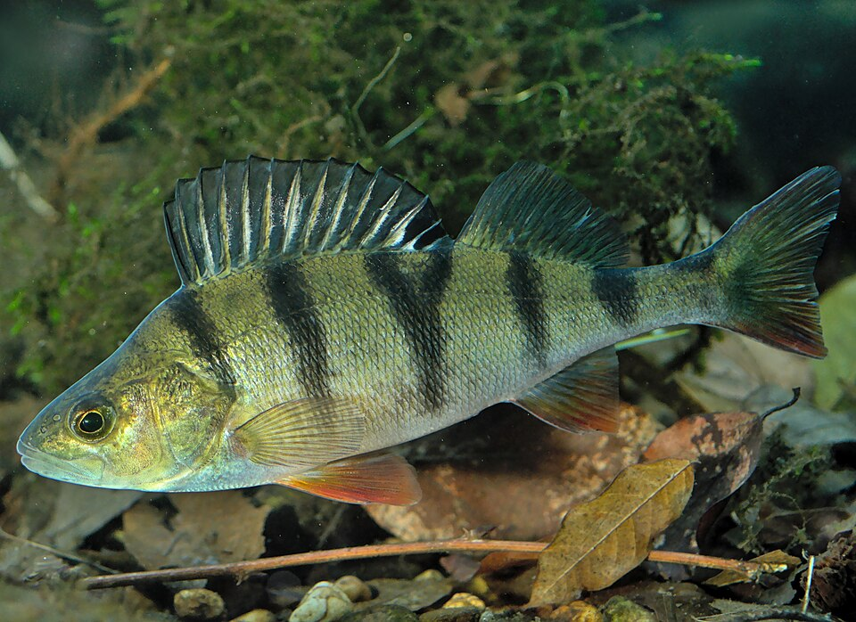
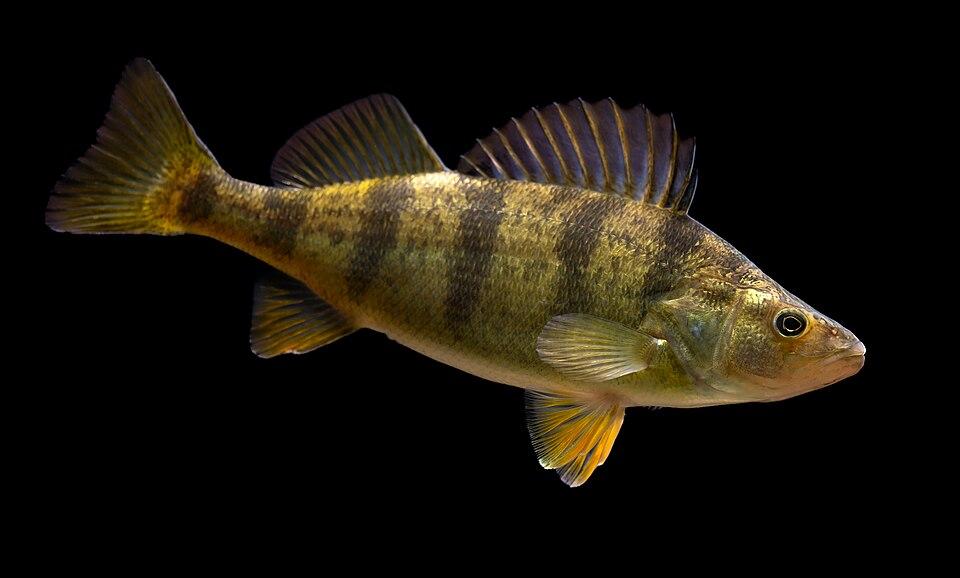
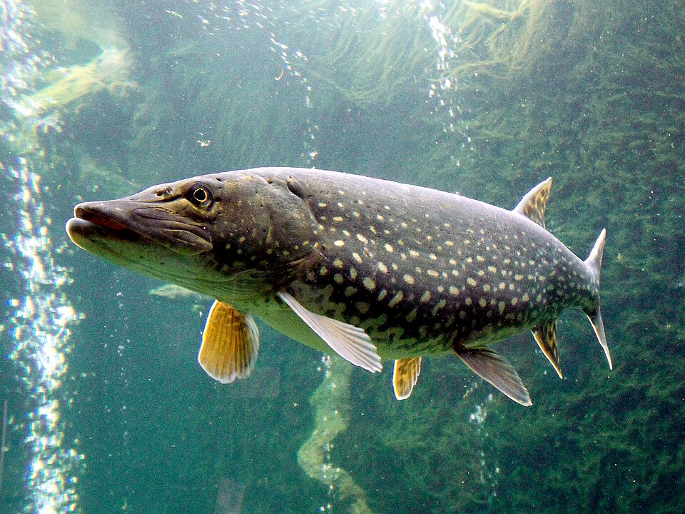
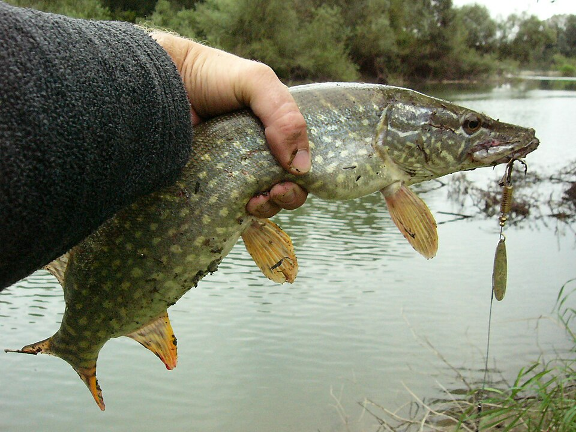

catfish-wels
Ожидание: Catfish
Ответ: Catfish · 99.99%
Верно
Dieter Florian (To contact the author, ask the uploader or take a look at tauchshop-florian.de.) · CC BY-SA 3.0 de
Первый класс верен на 7 из 8 фото рыб. Уверенных ошибок: 0. Выборка мала; общая точность неизвестна.

Ожидание: Catfish
Ответ: Catfish · 99.99%
Верно
Dieter Florian (To contact the author, ask the uploader or take a look at tauchshop-florian.de.) · CC BY-SA 3.0 de

Ожидание: Catfish
Ответ: Catfish · 99.99%
Верно
USFWS Mountain Prairie · Public domain

Ожидание: Gourami
Ответ: Gourami · 99.91%
Верно
Gourami Watcher · CC BY-SA 3.0

Ожидание: Gourami
Ответ: northern pike · 76.29%
Отказ от уверенного ответа
Mattia Nocciola · CC BY-SA 4.0

Ожидание: Perch
Ответ: Perch · 100.00%
Верно
Gilles San Martin · CC BY-SA 2.0

Ожидание: Perch
Ответ: Perch · 99.78%
Верно
USFWS Mountain Prairie · Public domain

Ожидание: northern pike
Ответ: northern pike · 99.98%
Верно
Jik jik · CC BY-SA 3.0

Ожидание: northern pike
Ответ: northern pike · 99.99%
Верно
Spinsta · Public domain
Ожидание: unknown
Ответ: unknown · 100.00%
Отказ от уверенного ответа
·